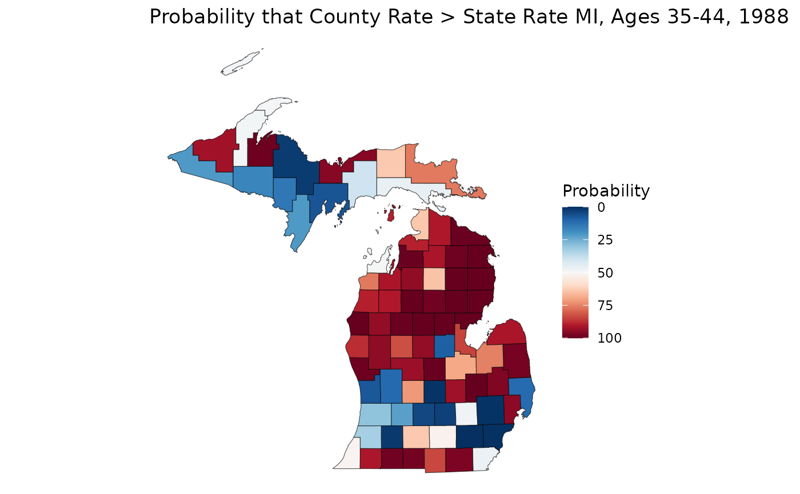

07: Sample Processing
RSTr-samples.RmdOverview
In the first series of vignettes, we worked with high-level wrapper
functions like age_standardize(),
suppress_estimates(), and get_estimates(). In
this vignette, we will be working with the functions that underlie these
wrappers and manually generating our estimates, unlocking the more
powerful capabilities of RSTr.
Before we begin, note that the above functions make direct changes to
our RSTr model object. We can manually save our estimates
to the model object, but these estimates will not be automatically
added. In exchange for more power with sample processing, we lose some
of the convenience afforded to us by these wrapper functions.
The load_samples() function
To begin, let’s generate samples for a new model:
mod_mst <- mstcar(name = "my_test_model", data = miheart, adjacency = miadj, seed = 1234)
#> Starting sampler on Batch 1 at Thu Dec 11 00:07:17
#> Generating estimates...
#> Model finished at Thu Dec 11 00:07:46The load_samples() function
Once mstcar() tells you that the model is finished
running, you can import samples into R using
load_samples(). load_samples() takes in four
arguments:
RSTr_obj: OurRSTrmodel object;param: The parameter to import samples for; andburn: Specifies a burn-in period for samples. This allows the model time to stabilize before using samples to generate estimates. By default, has a burn-in period of 2000 samples.
Any dimnames that were saved to data will
be applied to the samples as appropriate. Here, we pull in the
lambda samples for our test Michigan dataset with a
2000-sample burn-in period (as specified by the default arguments). We
also multiply by 100,000 as it is common to display mortality rates per
100,000 individuals:
samples <- load_samples(mod_mst, param = "lambda", burn = 2000) * 1e5Group aggregation
In many cases, we will want to aggregate our data across non-age
groups, such as when looking at prevalence estimates or to simply
consolidate our non-age sociodemographic groups. In our Michigan
dataset, we have 10 years of data over which we can consolidate to look
at prevalence. In these cases, we need to pull in the population array
as a weight. First, we need to check which margin contains our year
information using the dim() function:
dim(samples)
#> [1] 83 6 10 400Our samples array has four margins with dimensions
83, 6, 10, and 400,
representing the spatial regions, age groups, time periods, and
iterations, respectively. Let’s set a variable margin_time
to represent our time period margin and aggregate our
samples estimates across 1988-1988 using the
aggregate_samples() function. The population data needed to
weight our samples can be pulled from our RSTr model
object:
margin_time <- 3
pop <- mod_mst$data$n
samples_7988 <- aggregate_samples(samples, pop, margin_time)Now, we have a standalone sample array for our 1988-1988 samples. But
what if we are interested in both the individual year data and
the prevalence data? We can alternatively bind these new samples to our
main samples array by adding in values for the
bind_new and new_name arguments:
samples <- aggregate_samples(samples, pop, margin_time, bind_new = TRUE, new_name = "1979-1988")Group-aggregation is a feature unique to only samples; group-aggregation cannot be performed on model objects.
Age-standardization
The process of age-standardization is similar to that of
group-aggregation, but requires a bit more nuance in its use. We can
also use our samples to age-standardize these into a 35-64 group. Like
before, since we are using data from 1988-1988, we can use 1980 standard
populations from NIH
to generate a std_pop vector:
With std_pop generated, we need to then check which
margin contains our age group information using the dim()
function:
dim(samples)
#> [1] 83 6 11 400Our age groups lay along the second margin. Let’s set a variable
margin_age and standardize our samples
estimates across ages 35-64 using the standardize_samples()
function:
margin_age <- 2
groups <- c("35-44", "45-54", "55-64")
samples_3564 <- standardize_samples(samples, std_pop, margin_age, groups)Note that there may be times where you have groups stratified by both
age and other sociodemographic groups. In these cases, you’ll have to
refactor your sample array so that the age groups are separated from
your other groups before doing age-standardization, such as using
as.data.frame.table() in conjunction with
xtabs().
Now, we have a standalone array for our age-standardized 35-64 age
group. Similarly to aggregate_samples(), we can
alternatively consolidate this into our main samples array
by adding in values for the bind_new and
new_name arguments:
samples <- standardize_samples(
samples,
std_pop,
margin_age,
groups,
bind_new = TRUE,
new_name = "35-64"
)Now, our samples for samples are aggregated by year and
age-standardized, and we have matching array values for
pop. Note that if you plan on doing a mix of non-age
aggregation and age-standardization, do age-standardization
after aggregation, as doing age-standardization first will
alter the results of any aggregation done afterward.
Estimates and Reliability
To get our medians, we simply put our samples into get_medians():
medians <- get_medians(samples)Let’s get some reliability metrics for our dataset. First, let’s
generate our relative precisions at 95% credibility using the
get_credible_interval() and
get_relative_precision() functions, then create a
logical array that tells us which estimates
are unreliable:
ci <- get_credible_interval(sample = samples, perc_ci = 0.95)
rel_prec <- get_relative_precision(medians, ci)
low_rel_prec <- rel_prec < 1Now, let’s generate a similar logical array
for populations less than 1000 and use these criteria to create a set of
suppressed medians. A median will be suppressed if it meets either of
the two criteria. Note that since our samples are age-standardized, we
also have to extend our pop array to match in size using
the aggregate_count() function:
pop <- aggregate_count(pop, margin_age, groups = 1:3, bind_new = TRUE, new_name = "35-64")
pop <- aggregate_count(pop, margin_time, bind_new = TRUE, new_name = "1988-1988")
low_population <- pop < 1000
medians_supp <- medians
medians_supp[low_rel_prec | low_population] <- NALet’s now map our suppressed estimates:
library(ggplot2)
est_3544 <- medians_supp[, "35-44", "1988"]
ggplot(mishp) +
geom_sf(aes(fill = est_3544)) +
labs(
title = "Smoothed Myocardial Infarction Death Rates in MI, Ages 35-44, 1988",
fill = "Deaths per 100,000"
) +
scale_fill_viridis_c() +
theme_void()With our samples available, we can generate estimates from different credible intervals without having to re-run the model:
ci <- get_credible_interval(samples, 0.995)
rel_prec50 <- get_relative_precision(medians, ci)
low_rel_prec <- rel_prec50 < 1
medians_supp <- medians
medians_supp[low_rel_prec | low_population] <- NA
est_3544 <- medians_supp[, "35-44", "1988"]
ggplot(mishp) +
geom_sf(aes(fill = est_3544)) +
labs(
title = "Smoothed Myocardial Infarction Death Rates in MI, 99.5% CI, Ages 35-44, 1988",
fill = "Deaths per 100,000"
) +
scale_fill_viridis_c() +
theme_void()We can even use these samples to learn more about our data. Let’s say we are interested in figuring out if a rate estimate is statistically significantly greater than or less than the overall state rate. We can calculate a crude state rate for our 35-44 age group, then compare that against our samples. Note that we can make statistical significance comparisons, even if our rates are unreliable:
crude_3544 <- sum(mod_mst$data$Y[, "35-44", "1988"]) / sum(mod_mst$data$n[, "35-44", "1988"]) * 1e5
sample_3544 <- samples[, "35-44", "1988", ]
p_higher <- apply(sample_3544, 1, \(county) mean(county > crude_3544)) * 100
ggplot(mishp) +
geom_sf(aes(fill = p_higher)) +
labs(
title = "Probability that County Rate > State Rate MI, Ages 35-44, 1988",
fill = "Probability"
) +
scale_fill_continuous(palette = "RdBu", trans = "reverse") +
theme_void()
On this map, we can see that much of the northern Lower Peninsula is significantly lower than the state rate, whereas the southern portion of the LP has many places with significantly higher rates. The western Upper Peninsula also shows areas of significantly higher rates.
Closing Thoughts
In this vignette, we discussed features unique to sample processing
like aggregate_samples(), more granual control over our
samples, and extensions of our analysis using samples.